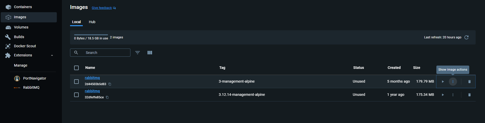
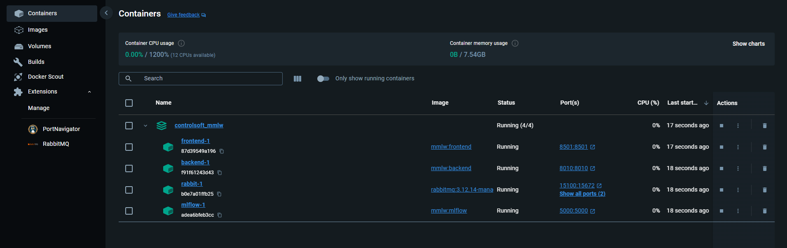
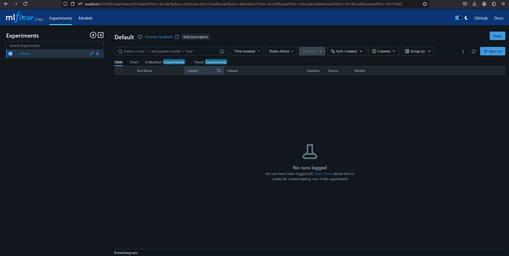
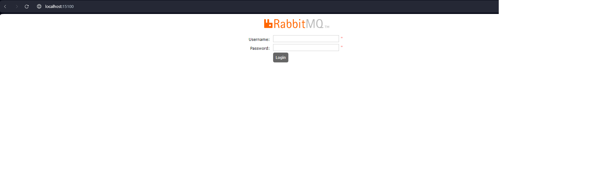
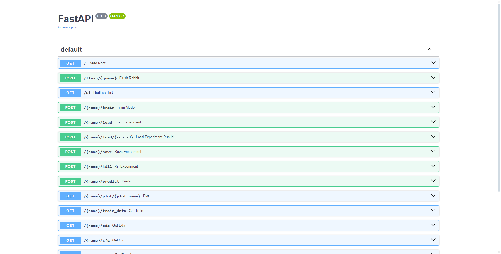
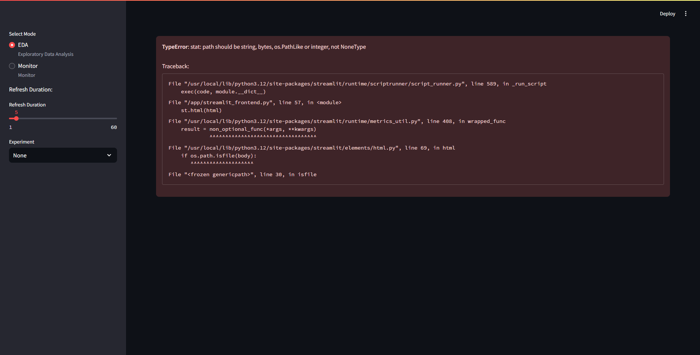

Containerization of ObServML -- Docker
This section will tell the reader how to use the ObServML in production. For starters, you can find .dockerfiles (for mlflow, backend) in the repository, which have to be built first to be used. Docker compose will start the ObServML by launching interconnected microservices with the help of docker compose.
The example project contains the docker-compose.yaml and the configuration files we require.
Project template
Pull "main" branch to obtain the code to communicate with the backend. You can use the project template's mindeps.txt for minimal dependency:
pip install -r mindeps.txt
NOTE: Minimal dependencies will make you unable to run locally. It will only allow for scripts to run. This way, the size of the virtual environment is reduced significantly.
RabbitMQ
This image is relatively easy to get. It should be pulled from this Docker repository. Docker is used in terminal, so either cmd, or a python IDE can accomodate. Walkthrough for: - Linux - Windows - VSCode - Pycharm
In this version of ObServML, we tested with rabbitmq:3.12.14-management-alpine, but can be used with any version that is less than 2.0.0. So type into the terminal:
docker pull rabbitmq:3.12.14-management-alpine ## pull image_name:image_tag
If you use Docker Desktop, and everything went fine, then the image will appear:

Building images
In case of not being able to access to the prebuild Docker images, we also provide a tutorial on creating these images. DOCKER ENGINE IS REQUIRED!
First you have to pull the git repository, and then navigate to the "main" branch:
git pull
...
git checkout main
NOTE: BUILDING THE IMAGES DO NOT REQUIRE A WORKING VIRTUAL ENVIRONMENT!
Building requires the following Docker command:
docker build . -t {name}:{tag} -f {filename.dockerfile, preferably in root directory}
If you want to build the images locally:
docker build . -t mmlw:mlflow -f mlflow.dockerfile
docker build . -t mmlw:frontend -f streamlit_frontend.dockerfile
docker build . -t mmlw:backend -f service.dockerfile
For the first run with build, the backend may take up to 1000s to build this image, which is reduced to ~600s after caching.
Please do not modify the branch (DO NOT push to branch) -- open a new branch instead, if you modify the code:
git branch [--branch_name]
NOTE: The Rabbit image must be pulled for successful start.
Running Docker images with compose
Docker compose [3] starts the application from images and creates a network, through which the applications can communicate. It requires a docker-compose.yaml file that specifies the behaviour of the stack.
The structure is as follows:
services:
service_A : # service name
image : A:latest # image-name:tag
ports:
- 5100:5672 ## will expose local port
# 5672 to global 5100, outside is only reachable from 5100
environment:
HUB_URL : "http://service_B:8010" ## OS environmental variables
# defined in dockerfile
## can refer to service_B IP address as service_B
networks:
- common_network
service_B :
image : B:latest
ports:
- 8010:8010 # CAN be the same
networks:
- common_network
networks: # define existing/nonexisit networks to be used
# can also be an outside network...
common_network: ## name
driver: bridge
name: common_network # we recommend this to be the same as the key
A docker-compose file is already provided in the GitHub repository (mmlw_template_project branch), and therefore will not be necessary to write out own. For further understanding, please see [5]. Its contents are the following:
services:
rabbit:
image: rabbitmq:3.12.14-management-alpine
ports:
- 5100:5672
- 15100:15672
networks:
- mml_network
restart:
on-failure
mlflow:
image: mmlw:mlflow
ports:
- 5000:5000
networks:
- mml_network
restart:
on-failure
backend:
image: mmlw:backend
ports :
- 8010:8010
depends_on:
rabbit :
condition: service_started
mlflow :
condition: service_started
environment:
MLFLOW_URI : "http://mlflow:5000"
RABBIT_HOST : "rabbit"
RABBIT_PORT : "5672"
RABBIT_USER : "guest"
RABBIT_PASSWORD : "guest"
restart:
on-failure
networks:
- mml_network
frontend:
image: mmlw:frontend
ports:
- 8501:8501
depends_on:
backend:
condition: service_started
environment:
HUB_URL : "http://backend:8010"
restart:
on-failure
networks:
- mml_network
networks:
mml_network:
driver: bridge
name: mml_network
To run the set of applications, type in:
docker compose up
What you will see in the Desktop app is:

Interfaces
If the compose file has not been changed, then the mlflow client can be opened thought a webbrowser:
http://localhost:5000

The management version enables monitoring though a TCP ip. It is currently set on 15100. The starting username and password is always guest. Open though webbrowser:
http://localhost:15100

The backend and frontend is also viewable: Backend:
http://localhost:8010/docs
 Frontend:
http://localhost:8105

The frontend will show error if no models are found. DO NOT PANIC! It will work after the first training/loading session.
If everything opened, then congratulations, you have set up the application with Docker!